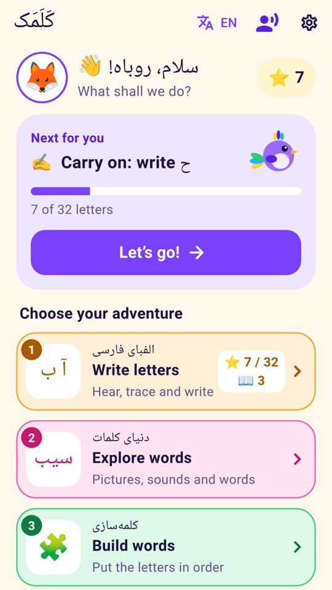
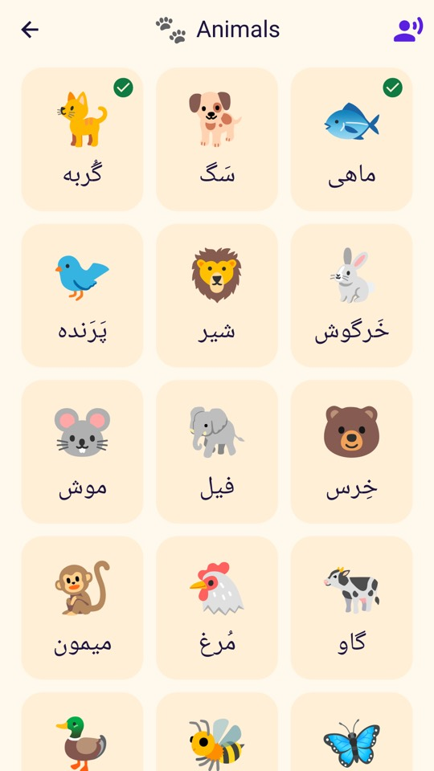
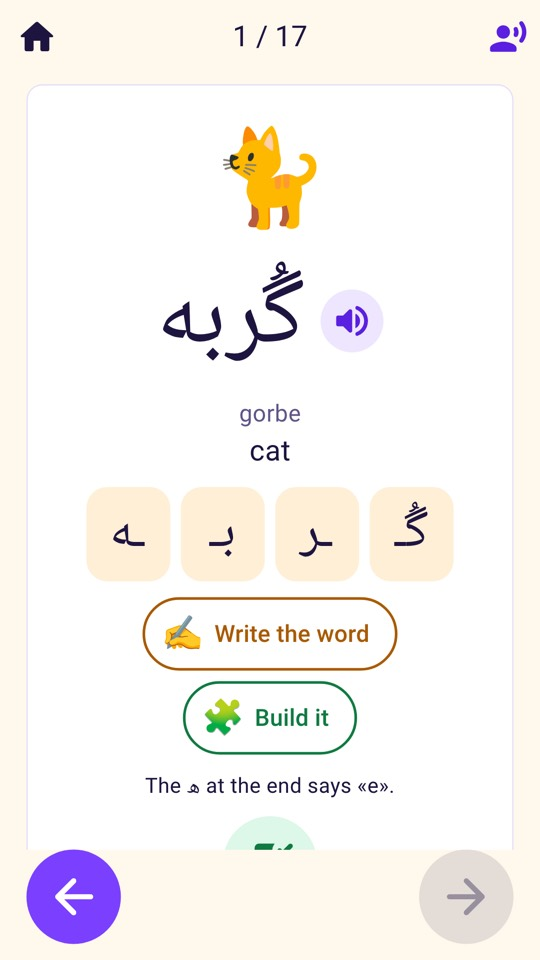
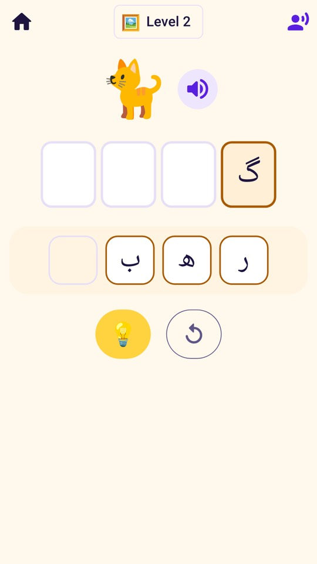
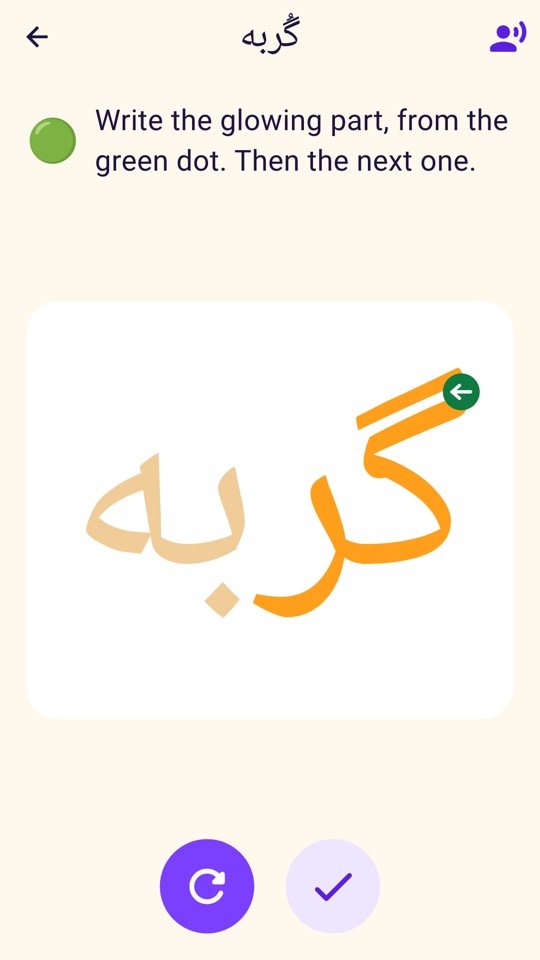
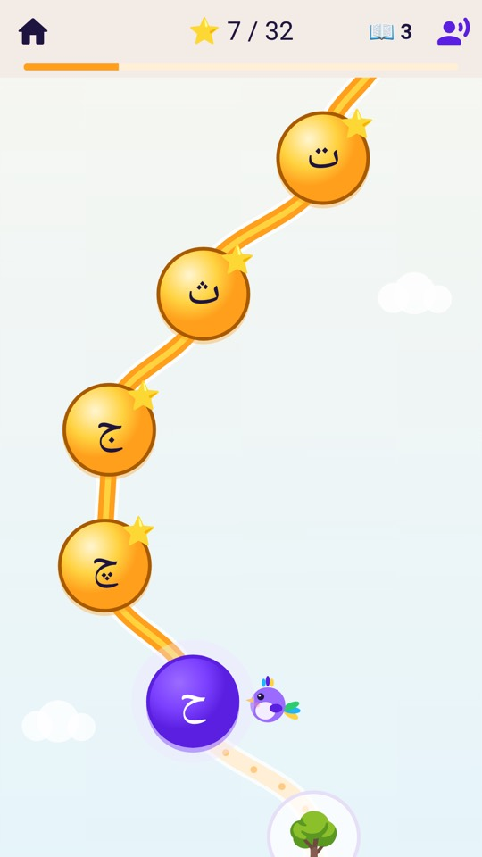
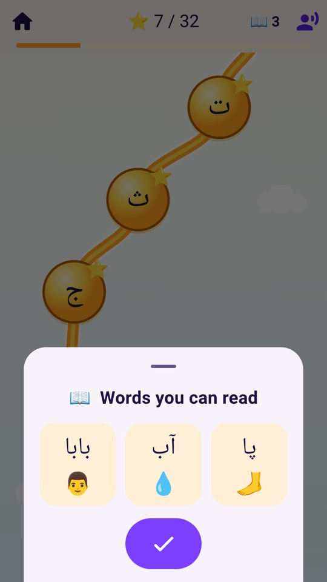
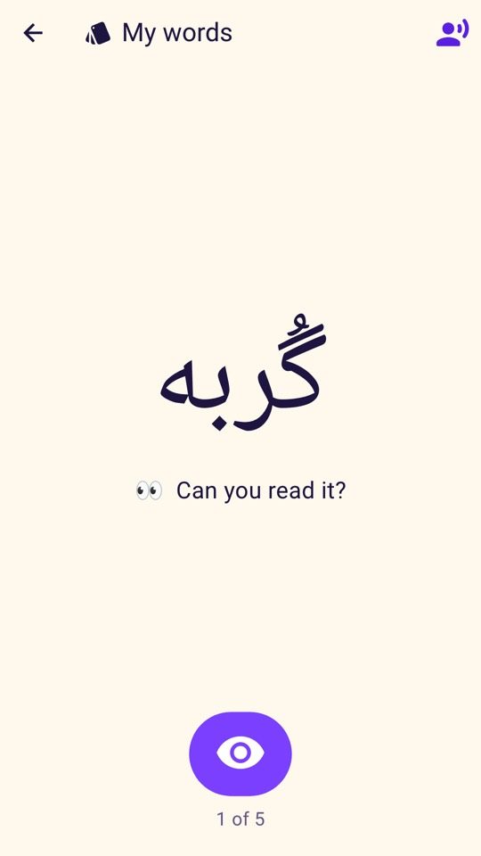

Kalamak
کَلَمَک · کلمهٔ کوچولوAny word they can say, they can read in Farsi.
Most children of Iranian families abroad understand Farsi and speak some, but the script stays a stranger. In Kalamak the child picks the word: they say or type cat, gato, chat or «گربه», and meet it written in Farsi, letter by letter, in a real Farsi voice. Then they write it with a finger and keep it.
- Ages 6 to 13
- English · Español · Français · فارسی
- Free, no ads
- Android Soon
گُربه
- گگاف
- ررِ
- ببِ
- ههِ
میگوییم خونه، مینویسیم خانهWe say khooneh, we write khaneh
How it works
- Say it
Say a word, or type it: in Farsi letters, or the way kids type Farsi in English letters (gorbe, khooneh).
- See it
The picture and the word, big, with its vowel marks, said aloud by a real, recorded Farsi voice.
- Meet the letters
Tap a letter: its name, its sound and all its shapes, with the one used here lit up.
- Build it, write it
Put its letter tiles in order, right to left, and watch them join. Then trace it piece by piece, the way Farsi is written by hand.
- Keep it
Kept words go to My words, to read again whenever they like: a few at a time, then a calm “that’s all”.
A look inside








بچه باید خودش بخواهد بخواند
A child has to want to read. So Kalamak starts from the words a child already cares about (their cat, their football, their grandmother’s name) instead of a curriculum. Spoken Farsi gets a bridge to written Farsi too: say «نون» (noon) and Kalamak shows that we write «نان».
Skills kids practise
- Reading Farsi script
Words they know by ear, seen written, read again later in My words.
- Letters and their shapes
Each letter’s name, sound and its alone, start, middle and end forms, on a journey through all 32.
- Spelling
Word Builder’s six levels, from matching letter outlines to building a word they only hear.
- Reading from the first letters
Each letter written shows the words it opens: “now you can read…” «بابا», «آب», «پا».
- Handwriting
Right to left, where each stroke starts, and dots and marks last.
- Speech to writing
How everyday spoken Farsi is written, and why the final ه says “e”.
- Two languages side by side
A word from school life in English, Spanish or French, and its Farsi twin.
- Reading because they want to
No scores, no streaks, no timers: the growing word collection is the reward. The Simorgh shares what reading Farsi opens up.
For grown-ups
- A corner just for you
Hold the gear for two seconds to open the grown-ups’ corner, out of a child’s way.
- Your family’s words
Write words for your child to find: names, family sayings, the words of your home.
- Little missions at home
At most one a day, at a calm end: a small thing to try off the screen, shown in your own language if you like.
- The microphone is yours to switch on
Off until you allow it, and it listens on the phone itself. Nothing is recorded or sent.
- Optional helpers
A translator for words beyond Kalamak’s list and better Farsi listening, each downloaded only if you switch it on, and removable.
- Works offline
No accounts, no ads, no purchases, no tracking. Everything stays on the device. Ready for large text and tablets.
- Next door: Alefba
Kalamak is the child-led door; Alefba, coming later, teaches reading step by step with the same letters and voice.
به فارسی
کَلَمَک اپی رایگان از طرح «الفبای خانه» است. بچه هر کلمهای را که دوست دارد میگوید یا تایپ میکند، به فارسی یا انگلیسی و اسپانیایی و فرانسوی، و میبیند که آن کلمه به فارسی چطور نوشته میشود: حرف به حرف، با صدای فارسی. بعد با انگشت مینویسدش، با کاشیهای حرفها میسازدش و در «کلمههای من» نگهش میدارد. بدون تبلیغ، بدون حساب کاربری، و هیچ اطلاعاتی از دستگاه بیرون نمیرود.
Privacy
Kalamak collects no personal information. Words, writing and settings stay on the device, the microphone works on the phone only, and nothing a child says or types is sent anywhere. Read the full privacy policy.
Contact
Questions, a word we got wrong, or feedback: hichgah.game@gmail.com